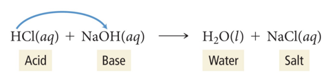
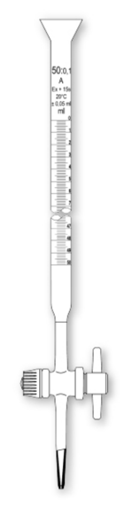
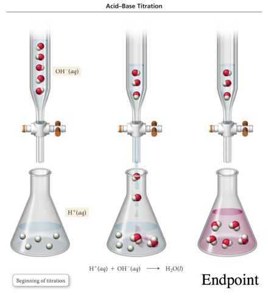
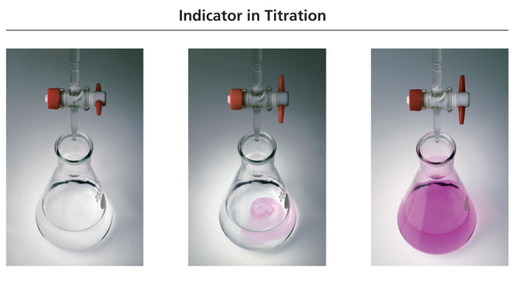
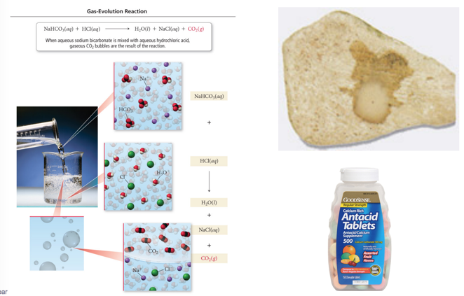

As long as the salt that forms is soluble in water, the net ionic equation for an acid–base reaction is:
H+(aq) + OH–(aq) → H2O(l)
A neutralization reaction is completed when the moles of acid equal the moles of base in the solution.
Moles of acid = Moles of base
A neutralization reaction does not always mean that the pH of the solution is 7.
Acids and Bases in Solution
Audio 0:16:36.637260
Acids ionize in water to form H+ ions; more precisely, the H from the acid molecule is donated to a water molecule to form hydronium ion, H3O+.
Most chemists use H+ and H3O+ interchangeably.
Bases dissociate in water to form OH– ions.
Bases, such as NH3, that do not contain OH– ions produce OH– by pulling H off water molecules.
In the reaction of an acid with a base, the H+ from the acid combines with the OH– from the base to make water.
– The cation from the base combines with the anion from the acid to make the salt.

Acid–Base Reaction
HCl(aq) + NaOH(aq) → NaCl(aq) + H2O(l)
The reaction of hydrochloric acid (acid) and sodium hydroxide (base) forms sodium chloride (soluble salt) and water.
This is a problem because some things can not be legally put down the sink and it depends on the acidity
In a titration, a substance in a solution of known concentration is reacted with another substance in a solution of unknown concentration.
When exactly enough solution has been added the reactants are in their stoichiometric ratio. Called the equivalence point
The solution of known concentration is added slowly from an instrument called a burette.
A long glass tube with precise volume markings that allows small additions of solution
The titrant is the solution in the burette.

Acid–Base Titrations
Audio 0:25:27.198386
In acid–base titrations, because both the reactant and product solutions are colorless, a chemical is added that changes color when the solution undergoes large changes in acidity/alkalinity.
The chemical is called an indicator.
The endpoint of a reaction is when the indicator color changes.
The endpoint of an acid–base titration is where the number of moles of H+ equals the number of moles of OH–.
This is known as the equivalence point.
Acid–Base Titration
Audio 0:26:39.290296

Titration

In this titration, NaOH is added to a dilute HCl solution. When the NaOH and HCl reach stoichiometric proportions (the equivalence point), the indicator changes color to pink.
Practice Problem: Acid–Base Titration
Audio 0:32:01.268341
The titration of a 10.00 mL sample of HCL solution of unknown concentration requires 12.54 ml of a 0.100 M NaOH solution to reach the equivalence point. What is the concentration of the unknown HCl solution in M?
Clicker 4
Audio 0:33:40.733664
The titration of 25.0 mL of an unknown concentration of H2SO4 solution requires 83.6 mL of 0.12 M LiOH solution. What is the concentration of the H2
Gas-Evolution Chemical Reactions
Audio 0:41:08.439627
In a gas-evolution reaction, a gas forms, resulting in bubbling.
In both acid–base and gas-evolution reactions, as in precipitation reactions, the reactions occur when the anion from one reactant combines with the cation of the other.
Many gas-evolution reactions are also acid– base reactions.
Example of Gas-Evolution Reactions
Audio 0:42:31.119388
Some reactions form a gas directly from the ion exchange.
K2S(aq) + H2SO4(aq) → K2SO4(aq) + H2S(g)
Other reactions form a gas by the decomposition of one of the ion exchange products into a gas and water.
NaHCO3(aq) + HCl(aq) → NaCl(aq) + H2CO3(aq)
H2CO3(aq) → H2O(l) + CO2(g)
Gas-Evolution Reaction
Audio 0:44:17.526266
NaHCO3(aq) + HCl(aq) H2O(l) + NaCl(aq) + CO2(g)
When aqueous sodium bicarbonate is mixed with aqueous hydrochloric acid, gaseous CO2 bubbles are the result of the reaction.

Types of Compounds That Undergo GasEvolution Reactions